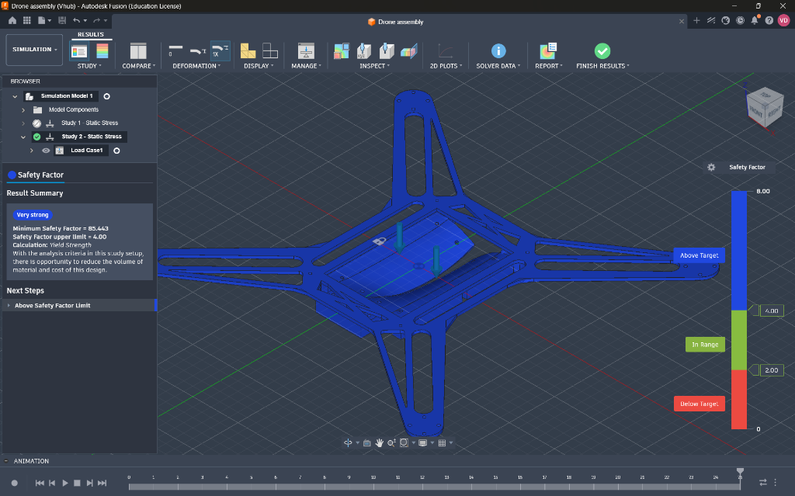

Custom CNC Frame Design
Designed from the ground up in Fusion 360, the primary frame utilizes a unibody CNC carbon fiber construction with a 440mm wheelbase, engineered specifically to support 7-inch propellers for heavy lift capabilities.
The architecture tightly integrates standard hardware patterns, supporting a 30.5x30.5mm FC/ESC stack and 16x16mm / 19x19mm M3 motor mounts to ensure seamless compatibility with industry-standard propulsion systems.
Payload Mechanism & FEA Validation
The core objective was to engineer a reliable drop mechanism for a 1kg medical kit (150x100x50mm). This was achieved by designing custom bomb-bay style doors integrated directly into the unibody frame. The doors pivot on tightly-toleranced, 3D-printed interlocking piano hinges and are secured by a sweeping deadbolt actuated by an MG996R servo.
To guarantee reliability before manufacturing, the entire assembly underwent rigorous Finite Element Analysis (FEA) in Fusion 360. The static load simulations demonstrated exceptional structural integrity, achieving a Minimum Safety Factor of 85.443 under a 10N static load—proving the mechanism is fundamentally bomb-proof.
The Big Picture: Project Roadmap
What started as a structural engineering challenge has now evolved into a fully-integrated multidisciplinary system. The digital foundation for the mechanical, electrical, and software phases is completely finished!
Mechanical Engineering
Custom 440mm unibody carbon fiber frame, servo-actuated piano hinge payload doors, and 10N static load FEA validation.
Custom Flight Controller (PCB Design)
Engineered an STM32-based custom flight controller PCB in KiCad, integrating an MPU-6000 IMU, MP1584EN buck converter, and JST headers. Verified through 3D mechanical interference checks.
Software Simulation & Telemetry Stack
Developed a full-stack emergency dispatch system leveraging ArduCopter SITL, a Flask API, and a mobile web dashboard for live GPS waypoint navigation and terminal guidance.
Manufacturing & Physical Integration
Ordering the PCB from a fab house, CNC cutting the frame, and soldering the final hardware to flash the STM32 for real-world PID tuning.
Electrical Engineering: Custom Flight Controller
Instead of relying on an off-the-shelf commercial flight controller, I designed a custom PCB from scratch using KiCad. The board is powered by an STM32 microcontroller and features a high-efficiency MP1584EN buck converter to step down raw LiPo voltage, alongside an MPU-6000 IMU for rock-solid flight stabilization.
After routing the 4-layer board and passing DRC, the 3D model was exported as a STEP file and dropped back into the Fusion 360 mechanical assembly. This workflow allowed me to design a custom snap-fit plastic sled to mount the PCB without needing dedicated screw holes, ensuring a perfect mechanical fit before ever ordering the physical board.
Software Engineering: Full-Stack Simulation & Terminal Guidance
To safely test the autonomous delivery sequence before risking hardware, I built a robust software pipeline utilizing ArduCopter SITL (Software In The Loop). The system consists of three massive components:
- Mobile Dispatch API: A Flask server that accepts real-world GPS coordinates from a user's phone via an emergency SOS button, instantly spawning a virtual drone mission in the background.
- Mission Control Dashboard: A sleek web UI that constantly polls the drone's telemetry JSON data at 4Hz to display live updates on altitude, flight phase, and battery drain.
- Terminal Guidance: Once the drone reaches the GPS waypoint, a Python script fires up a live camera feed. Using OpenCV and HSV color space masking, the code tracks an orange landing pad and translates the bounding box into closed-loop velocity vectors, allowing the drone to physically strafe and lock-on for a pinpoint delivery in GPS-denied environments.
Next Steps: Manufacturing
With the digital trinity (CAD, PCB Layout, and Software Simulation) completely finished, the project is officially ready for physical manufacturing. Gerber files have been exported for PCB fabrication, the custom frame is queued for CNC routing, and the custom 3D printed sled is ready for integration.